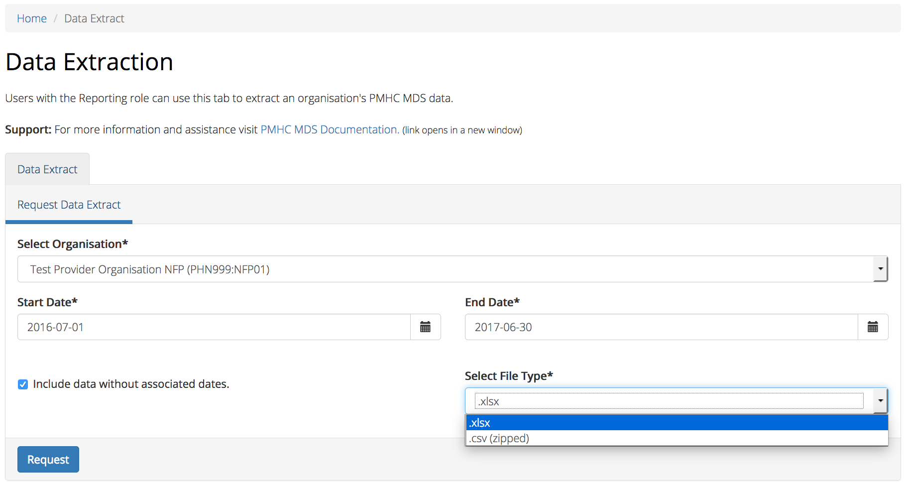

Reports¶
You will only be able to see the Reports tab if you have been assigned the ‘Reporting’ Users Roles, when logged into the PMHC MDS on https://pmhc-mds.net.
If you don’t have access to the Reports tab and you believe you should, please contact someone in your provider organisation or provider organisation’s PHN who has the ‘User Management’ role. If you are unsure who has the ‘User Management’ role please email the PMHC Helpdesk at support@pmhc-mds.com
After navigating to the Reports tab, you will be presented with two tabs - System Reports and Data Extract.

System Reports¶
How to produce a report¶
You can produce a system report by completing the fields in the Systems Reports tab by following these steps:
- Navigate to the ‘System Reports tab’ that is contained within the ‘Reports’ tab.
- Select the type of report you would like to produce.
- If you are allowed to produce reports for more than one organisation you will be asked to select an organisation name.
- Select the name of the organisation from the drop down list.
- Click the first calendar icon to select the start date and then the second calendar icon to select the end date.
- Click the blue ‘Request’ button.
- Your report will be displayed.

Types of System Reports¶
The reports are grouped into five categories, each designed to serve different purposes:
- Category A: Monitoring progress of MDS implementation
- Category B: Monitoring overall service delivery
- Category C: Monitoring implementation of stepped care
- Category D: Key Performance Indicators
- Category E: Reports for data managers to monitor data supply
Note: Category A-D reports are still to be implemented.
Category A: Monitoring progress of MDS implementation¶
These reports are designed to assist monitoring MDS uptake and compliance with key business rules.
The reports provide summary data on:
- Volumes (‘active clients’/’active episodes’/contacts)
- Data quality in terms of compliance with key business rules
Note: A subset of these reports is included in Category E: Reports for data managers to monitor data supply without any filtering for active clients or episodes to enable organisational data managers to monitor ‘raw’ upload and data supply to the MDS.
A1 - High level summary of overall volumes by entity¶
This report is designed to provide a ‘one page’ view, with data aggregated for the specified reporting period, covering counts of clients, episodes and service contacts.
Key specifications:
- To be counted, a client must have had one or more Service Contacts in the reporting period, defined for this report’s purposes as ‘Active Clients’. Clients are counted uniquely regardless of number of episodes.
- Episodes to be counted if one or more Service Contacts were recorded in the period - defined for this report purpose as ‘Active Episodes’.
- All Service Contacts in the period are reported except those that are flagged as ‘No Show’.
- All dates refer to date of service not date of data upload or data entry.
A2 - Monthly volume trends¶
This report is designed to show volume trends in clients, episodes and service contacts.
Key specifications:
- To be counted, a client must have had one or more Service Contacts in the reporting period, defined for this report purposes as ‘Active Clients’. Clients are counted uniquely regardless of number of episodes.
- Episodes to be counted if one or more Service Contacts was recorded in the period – defined for this report purpose as ‘Active Episodes’.
- All Service Contacts in the period are reported except those that are flagged as ‘No Show’.
- All dates refer to date of service not date of upload or data entry.
A3 - Data quality report - Missing and invalid client data¶
This report will soon be implemented.
A4 - Data quality report - Missing and invalid episode data¶
This report will soon be implemented.
A5 - Data quality report - Missing and invalid service contact data¶
This report will soon be implemented.
A6 - Data quality report - Missing and invalid practitioner data¶
This report will soon be implemented.
A7 - Open episodes with no service contact activity for 90+ days¶
This report will soon be implemented.
A8 - Data quality report - Recording of outcome measures for open episodes¶
This report will soon be implemented.
A9 - Data quality report - Recording of outcome measures for completed episodes¶
This report will soon be implemented.
Category E: Reports for data managers to monitor data supply¶
These reports are designed to assist in monitoring the amount and type of data that has been input into the MDS.
They are based on a subset of Category A reports but differ in two important ways:
- The reports are based on ‘raw data’, not filtered or trimmed by any data quality censoring. Comparable Category A reports restrict the reported data by specific edit criteria (e.g., Category A reports are only based on ‘active clients’, ‘active episodes’ and ‘active providers’).
- All dates refer to date of upload. Comparable Category A reports are based on date of service.
Category E reports are specifically designed to enable PHN and Provider Organisation data managers to monitor upload and data supply to the MDS.
The reports provide summary data on:
- Raw volumes (clients/episodes/service contacts/collection occasions/practitioners) over time periods
- Raw volumes per day (clients/episodes/service contacts/collection occasions/practitioners)
E1 - High level summary of overall volumes by entity¶
This report is designed to provide a ‘one page’ view, with data aggregated for the specified reporting period, covering counts of clients, episodes, service contacts, collection occasions and practitioners, without any filtering for business rules.
Key specifications:
- All records to be counted with no filtering.
- All dates refer to date of modification, not date of service.
E2 - Volume trends¶
This report is designed to show volume trends in clients, episodes, service contacts, collection occasions and practitioners.
Key specifications:
- All records to be counted with no filtering.
- All dates refer to date of insertion, not date of service.
- Results are cumulative.
E3 - Activity per day¶
This report will show a summary of the number of clients, episodes, service contacts, collections occasions and practitioners added or modified each day. Its purpose is to give entities information about when and how much data was added or modified.
Key specifications:
- All records to be counted with no filtering.
- All dates refer to date of modification, not date of service.
Data Extract¶
After navigating to the Data Extraction tab, you will be presented with a Request Data Extract.
How to download an organsiation’s data¶
You can extract a PHN’s or provider organisation’s PMHC MDS data by completing the Download Data fields in the Data Extraction tab, by following these steps:
Navigate to the ‘Data Extract’ tab that is contained within the ‘Reports’ tab.
If you are allowed to download data from more than one organisation you will be asked to select an organisation name.
Select the name of the organisation from the drop down list.
Click the first calendar icon to select the start date and then the second calendar icon to select the end date.
Click the ‘Include data without associated dates’ checkbox, if required.
Please note: As the query is date based the following data will not by default be included in the extract:
- The start date of an episode is derived from the date of the first service contact. Therefore, if an episode doesn’t have any associated service contacts, there will be no start date for the episode and they will not by default be included in the data extract.
- Clients that don’t have any associated episodes, or who are associated with an episode with no service contacts also will not by default be included in the data extract.
- Practitioners who are not associated with a service contact will not by default be included in the data extract.
If you would like to include these episodes, clients and practitioners check the the ‘Include data without associated dates’ checkbox.
Select the File Type you’d like this data downloaded in.
Click the blue ‘Request’ button.
A dialogue box will be displayed, showing that the file is being requested from the server.
- When the file is ready, a ‘File ready for download’ message will be displayed.
- Click the blue ‘Download’ button.
- Your data extract will be downloaded to your computer.
The Data Extract dates are based on the Client’s Service Contact dates.
Please note: As the query is date based the following data will not by default be included in the extract:
- The start date of an episode is derived from the date of the first service contact. Therefore, if an episode doesn’t have any associated service contacts, there will be no start date for the episode and they will not by default be included in the data extract.
- Clients that don’t have any associated episodes, or who are associated with an episode with no service contacts also will not by default be included in the data extract.
- Practitioners who are not associated with a service contact will not by default be included in the data extract.
If you would like to include these episodes, clients and practitioners check the the ‘Include data without associated dates’ checkbox.